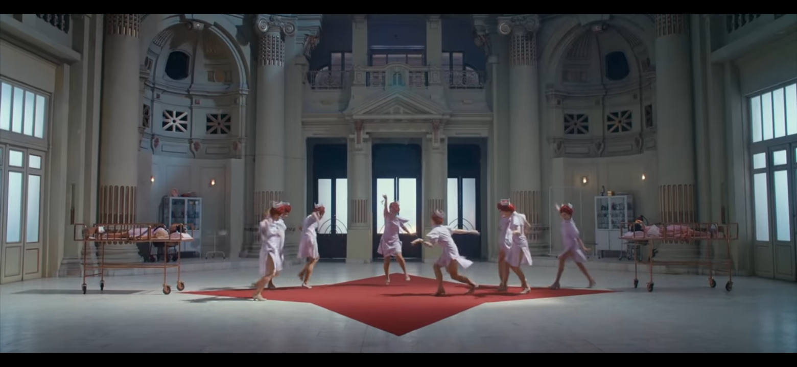
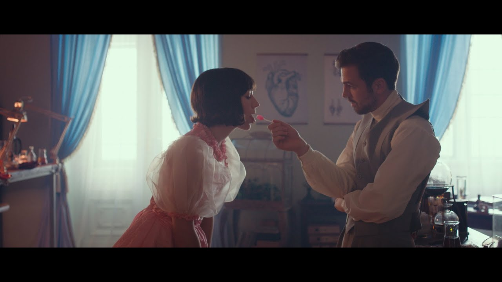

Mesmo com sua ingenuidade, a personagem percebe o que há de errado e tenta tomar atitude. Neste álbum não foi diferente. K-12 é uma sigla que representa o período escolar americano. Nesse trabalho, Cry Baby estuda em uma escola liderada por pessoas interesseiras, autoritárias e ganaciosas, que não ligam para os sentimentos e quereres dos alunos. Eles apenas querem impor, e fazer com que os aprendizes (oprimidos) reproduzam comportamentos, chamados de “ideais”. Todos devem ser alienados e sem opinião.
Wheels On The Bus
Começamos a experiencia com um passeio de ônibus, Wheels on the Bus, a música de menos de quatro minutos conta como é a viagem do ônibus escolar para o local de ensino. Durante a viagem, os personagens fazem coisas “inapropriadas” e o motorista age como se não estivesse vendo nada, e até parece se divertir com os feitos dos alunos. Fazendo uma metáfora direta com o fato de que algumas pessoas observam a “bagunça” acontecendo e resolvem não se comprometerem, se aproveitando dela em algumas das situações. Em Wheels on the Bus é utilizado um sample de música infantil.
Class Fight
Para a segunda do disco, em Class Fight O clipe fala sobre uma briga de escola, essa incentivada por ciúme infantil. A crítica principal aqui é do estímulo à criança de resolver seus problemas com violência. É a primeira vez no álbum em que é presente uma voz distorcida, evidente em algumas das músicas subsequentes.
The Principal
Partindo para The Principal, esta fala sobre o líder autoritário, ganancioso, cruel e que droga os alunos para conseguir manipulá-los facilmente. Na música, ela questiona onde estariam os princípios que o “diretor” diz ter. Melanie havia avisado que uma das músicas seria sobre o presidente norte-americano. Será essa uma crítica a Donal Trump?
Show & Tell
Show & Tell expressão que dá nome à música é uma atividade clássica norte-americana, em que o aluno leva um objeto para mostrar na aula e contar algo sobre ele. Aqui, Melanie quer mostrar uma objetificação do artista, tanto pela mídia quanto pela sociedade (incluindo fãs). Enquanto a primeira marionetiza os artistas, a segunda desumaniza-os, querendo que ajam como desejam. “É muito difícil pra mim dizer como eu me sinto / Tenho medo de ser descartada como uma casca de banana”, diz em trecho da música.
Nurse’s Office
A sexta canção do álbum, fala sobre alunos que fingem estar doentes para irem à a casa e matar aula. Nessa, Cry Baby fala sobre a aluna da carteira de trás estar cortando seu cabelo. Ou seja, ela quer fugir por causa do bullying.
Drama Club
A faixa fala sobre o clube de teatro (clássicos das escolas estadunidenses) para o qual Cry Baby não se inscreveu, porém, é forçada a participar. No vídeo, quando tenta deixar o auditório, é impedida por guardas. A peça de teatro na qual a personagem se apresenta durante a música é uma outra crítica dentro da trama: às ações machistas em relação às mulheres donas de casa que, impostas pela sociedade, têm de casar e fazer tudo pelo marido. O final do vídeo conta com um plot twist.
Strawberry Shortcake
Nessa faixa, a ideia menor, mas importante, é o corpo ideal, porém, suas críticas mais fortes são a objetificação da mulher e o assédio sofrido por elas. Ainda é colocada em pauta a questão do assediador ser inocentado enquanto a culpa recai sobre a vítima. Enquanto Cry Baby está com os peitos expostos (sem mamilo, assim como a boneca Barbie), garotos devoram pedaços de bolo, que no contexto fariam parte do corpo da personagem.
Lunhcbox Friends
Dessa vez, Melanie fala sobre amizades tóxicas. Um grupinho de meninas se aproxima de Cry Baby, chamando-a para almoçar na mesa delas, e só o fazem porque a pois tem algo que as interessa. Ainda falam que a ignorarão depois, enquanto a personagem diz que quer “uma amizade que durará para sempre”. Aqui ela faz amizade com Magnolia, que não tem um interesse por trás da amizade.
Orange Juice
A amizade tóxica também é presente aqui. Com a pressão estética existente, zombaria e incentivo de uma colega, a personagem Fleur vai ao banheiro e pratica bulimia. Cry Baby a vê e tenta convencê-la de que a aparência não é um problema e que “seu corpo é imperfeitamente perfeito”. No final do vídeo, Cry Baby ainda fala para a colega: “Tente não esperar amor de pessoas superficiais”. É mais uma música do disco com forte apelo social.
Detention
Cry Baby vai parar na detenção, onde é drogada para parecer feliz, com um sorriso falso. Conta que é deixada sozinha e que ninguém liga para ela ou seus sentimentos. Ainda, em alguns versos, faz uma metáfora sobre ser carne picada (fácil) para os clientes.
Teacher's Pet
Essa música mostra-se pesada, impactante e necessária. Fala sobre abuso de menores e estupro. Há manipulação de um professor sobre uma aluna, que confia nele, acreditando em suas boas intenções. Neste pedaço do filme, a personagem em destaque e que protagoniza o abuso é Angelita, amiga que acompanha Cry Baby desde o início do filme.
High School Sweethearts
A música mais estilo balada e com mais batidas do álbum. Fala sobre paqueras, de uma maneira já mais adulta, mas ainda com a ingenuidade (quando fala sobre achar um único e verdadeiro amor). Esta faixa contrasta com as outras.
Recess
Nessa música ela fala sobre um intervalo. Fala sobre a pressão que é estar na indústria musical, e o reforça com a frase “Pessoas vão dizer que se você precisar de uma pausa, alguém tomará o seu lugar” e “As pessoas vão tentar te dizer que você está bem mas com os olhos no dinheiro”.